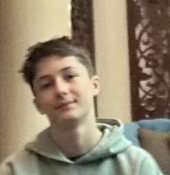

Raphaël BOULET lycéen
- Adresse : 20 rue Louis Blériot, Pérenchies
- Téléphone : 06 65 91 04 21
Objectif
Prendre de l'expérience dans le monde du travail et développer mes compétences, notamment dans le domaine scientifique.
Expérience
Année : 2025
- Option Sciences de l’Ingénieur (SI)
- Découverte des bases de l’ingénierie et de la technologie
- Travail sur des projets scientifiques
Formation
- Classe de Seconde
- Option Sciences de l’Ingénieur (SI)
Compétences
- Intérêt pour les sciences
- Esprit logique
- Travail en équipe
Loisirs
- Badminton
- Activités scientifiques